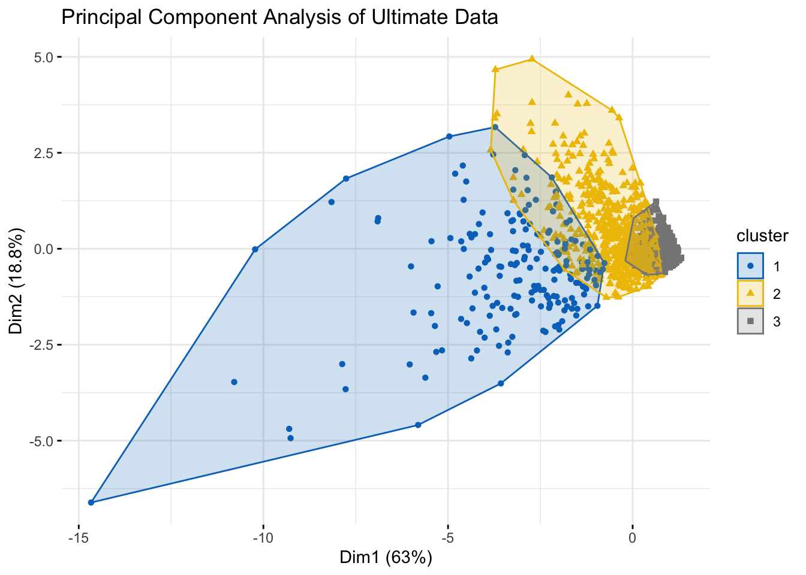

Warning: package 'tidyverse' was built under R version 4.4.2
Warning: package 'ggplot2' was built under R version 4.4.2
Warning: package 'tibble' was built under R version 4.4.2
Warning: package 'tidyr' was built under R version 4.4.2
Warning: package 'readr' was built under R version 4.4.2
Warning: package 'purrr' was built under R version 4.4.2
Warning: package 'dplyr' was built under R version 4.4.2
Warning: package 'stringr' was built under R version 4.4.2
Warning: package 'forcats' was built under R version 4.4.2
Warning: package 'lubridate' was built under R version 4.4.2
── Attaching core tidyverse packages ──────────────────────── tidyverse 2.0.0 ──
✔ dplyr 1.1.4 ✔ readr 2.1.5
✔ forcats 1.0.0 ✔ stringr 1.5.1
✔ ggplot2 3.5.1 ✔ tibble 3.2.1
✔ lubridate 1.9.4 ✔ tidyr 1.3.1
✔ purrr 1.0.2
── Conflicts ────────────────────────────────────────── tidyverse_conflicts() ──
✖ dplyr::filter() masks stats::filter()
✖ dplyr::lag() masks stats::lag()
ℹ Use the conflicted package (<http://conflicted.r-lib.org/>) to force all conflicts to become errors
library(gtsummary)
Warning: package 'gtsummary' was built under R version 4.4.3
library(ggplot2)library(psych)
Warning: package 'psych' was built under R version 4.4.3
Attaching package: 'psych'
The following objects are masked from 'package:ggplot2':
%+%, alpha
library(cluster)library(factoextra)
Warning: package 'factoextra' was built under R version 4.4.3
Welcome! Want to learn more? See two factoextra-related books at https://goo.gl/ve3WBa
library(dplyr)library(reticulate)
Warning: package 'reticulate' was built under R version 4.4.2
library(here)
Warning: package 'here' was built under R version 4.4.2
here() starts at C:/Users/anne/Documents/M244-Final-JVM
Introduction and Data
The data set includes statistics from the 2024 Division 1 and 3 Men’s and Women’s Ultimate Frisbee Championships. The statistics were found on USA Ultimate, the non-profit organization serving as the governing body for ultimate in the United States, and were taken from a data visualization titled “USA Ultimate 2024 Nationals Stats Dashboard”, which was created by Ben Ayres. The data set includes 1665 rows which each correspond to an individual player, and it includes 15 variables which categorize the players by Division, Gender, and Team, and provide game statistics for each player.
Ultimate frisbee is a sport growing in popularity at the collegiate level and within the Vassar student body as well. However, not much data analysis is available for Ultimate compared to other popular sports. We want to fit a model that would help players analyze their game performance. Therefore, via linear, LASSO, and ridge regression we will fit a prediction model that we train under supervised conditions to be able to predict a player’s plus/minus score (AKA individual impact) based on the variables turns_per_game, ds_per_game, ast_per_game, and pts_per_game. These variables all relate to a player’s effectiveness on the field, which is why we will use them to predict pls_mns_per_game. We will also stratify by division and gender, so that we ensure that we have an accurate model for each group. We will have four models in the final product, DI Men, DI Women, DIII Men, and DIII Women.
Since the data was already pretty clean, we did not have to do much data tidying. We just did some string manipulation to extract the school name from the team name, creating a new column called ‘school’, and had to convert some character variables to factors.
Rows: 1665 Columns: 17
── Column specification ────────────────────────────────────────────────────────
Delimiter: ","
chr (6): player, level, gender, division, team_name, school
dbl (11): Turns, Ds, Assists, Points, plus_minus, team_games, turns_per_game...
ℹ Use `spec()` to retrieve the full column specification for this data.
ℹ Specify the column types or set `show_col_types = FALSE` to quiet this message.
pls_mns_per_game turns_per_game ds_per_game ast_per_game
Min. :-8.8333 Min. : 0.0000 Min. :0.0000 Min. :0.0000
1st Qu.: 0.0000 1st Qu.: 0.0000 1st Qu.:0.0000 1st Qu.:0.0000
Median : 0.2000 Median : 0.4000 Median :0.2000 Median :0.1667
Mean : 0.4430 Mean : 0.9229 Mean :0.3543 Mean :0.5050
3rd Qu.: 0.8333 3rd Qu.: 1.1667 3rd Qu.:0.5000 3rd Qu.:0.6000
Max. : 5.8750 Max. :14.8333 Max. :7.1667 Max. :7.6000
pts_per_game
Min. :0.0000
1st Qu.:0.0000
Median :0.2000
Mean :0.5066
3rd Qu.:0.7143
Max. :4.4000
pairs(summary_data, main ="Pairwise Plots of Ultimate Stats")
Visualizations/EDA
# Plot player's plus-minus scores and their genderggplot(ultimate_data, aes(x = gender, y = plus_minus, fill = gender)) +geom_boxplot() +labs(title ="Gender vs. Player's +/- Score",x ="Gender",y ="Player's +/- Score" ) +theme_minimal()
# Filter table to create a new table called d3 that only contains d3 level playersd3 <- ultimate_data[ultimate_data$level =="Division 3",]# Plot Division 3 level player's plus-minus scores and their genderggplot(d3, aes(x = gender, y = plus_minus, fill = gender)) +geom_boxplot() +labs(title ="Division 3 Gender vs. Player's +/- Score",x ="Gender",y ="Player's +/- Score" ) +theme_minimal()
# Filter table to create a new table called d1 that only contains d3 level playersd1 <- ultimate_data[ultimate_data$level =="Division 1",]# Plot Division 1 level player's plus-minus scores and their genderggplot(d1, aes(x = gender, y = plus_minus, fill = gender)) +geom_boxplot() +labs(title ="Division 1 Gender vs. Player's +/- Score",x ="Gender",y ="Player's +/- Score" ) +theme_minimal()
# Plot player's plus-minus score against the divisional level they are playing inggplot(ultimate_data, aes(x = level, y = plus_minus, fill = level)) +geom_violin(trim =FALSE) +labs(title ="Player's +/- Score for Division 1 vs Division 3",x ="Division",y ="Player's +/- Score" ) +scale_fill_manual(values =c("Division 1"="blue", "Division 3"="pink")) +theme_minimal()
# Filter table to create a new table called women_ultimate_data that only contains female playerswomen_ultimate_data <- ultimate_data %>%filter(gender =="Women")# Plot female player's plus-minus score against the divisional level they are playing inggplot(women_ultimate_data, aes(x = level, y = plus_minus, fill = level)) +geom_violin(trim =FALSE) +labs(title ="Player's +/- Score for Division 1 vs Division 3 Women",x ="Division",y ="Player's +/- Score" ) +scale_fill_manual(values =c("Division 1"="blue", "Division 3"="pink")) +theme_minimal()
# Filter table to create a new table called men_ultimate_data that only contains male playersmen_ultimate_data <- ultimate_data %>%filter(gender =="Men")# Plot male player's plus-minus score against the divisional level they are playing inggplot(men_ultimate_data, aes(x = level, y = plus_minus, fill = level)) +geom_violin(trim =FALSE) +labs(title ="Player's +/- Score for Division 1 vs Division 3 Men",x ="Division",y ="Player's +/- Score" ) +scale_fill_manual(values =c("Division 1"="blue", "Division 3"="pink")) +theme_minimal()
# Plot a player's plus-minus score and their points per game for the different divisions and gendersultimate_data %>%ggplot(aes(x = pts_per_game, y = plus_minus, color = division)) +geom_point() +geom_smooth(method ='lm', se = F) +scale_x_log10() +labs(x ="Points per game", y ="Plus/Minus", color ="Division") +theme_minimal() +scale_color_viridis_d()
Warning: Removed 550 rows containing non-finite outside the scale range
(`stat_smooth()`).
# Plot a player's plus-minus score and their D's per game for the different divisions and gendersultimate_data %>%ggplot(aes(x = ds_per_game, y = plus_minus, color = division)) +geom_point() +geom_smooth(method ='lm', se = F)+theme_minimal() +scale_x_log10() +labs(x ="Ds per game", y ="Plus/Minus", color ="Division") +scale_color_viridis_d()
Warning: Removed 638 rows containing non-finite outside the scale range
(`stat_smooth()`).
# Plot a player's plus-minus score and their turns per game for the different divisions and gendersultimate_data %>%ggplot(aes(x = turns_per_game, y = plus_minus, color = division)) +geom_point() +geom_smooth(method ='lm', se = F) +scale_x_log10() +labs(x ="Turns per game", y ="Plus/Minus", color ="Division") +theme_minimal() +scale_color_viridis_d()
Warning: Removed 424 rows containing non-finite outside the scale range
(`stat_smooth()`).
# Plot a player's plus-minus score and their assists per game for the different divisions and gendersultimate_data %>%ggplot(aes(x = ast_per_game, y = plus_minus, color = division)) +geom_point() +geom_smooth(method ='lm', se = F) +scale_x_log10() +labs(x ="Assists per game", y ="Plus/Minus", color ="Division") +theme_minimal() +scale_color_viridis_d()
Warning: Removed 743 rows containing non-finite outside the scale range
(`stat_smooth()`).
# Create a dataset df1 by selecting the following the columns belowdf1 <- ultimate_data %>%select(c( turns_per_game, ds_per_game, pts_per_game, pls_mns_per_game, ast_per_game))# Perform principle component analysis on df1 pam_res <-pam(df1[-4], 3)# Plots the three clustersfviz_cluster(pam_res, data = df1[-4],geom ="point",ellipse.type ="convex",palette ="jco",ggtheme =theme_minimal()) +labs(title ="Principal Component Analysis of Ultimate Data")

We are fitting all three models that predict continuous variables: linear, LASSO, and ridge regression. Based on the results, we will select the model that is most accurate. Additionally, although the EDA for a player’s +/- score seems similar for division and gender, there are slight differences; therefore, we will fit the model for each combination of division and gender.
def plot_feature_contributions(results): sns.set(style="whitegrid")# For each group (level, gender), plot the feature coefficientsfor (level, gender), res in results.items(): coefs = res['coefficients']# Sort features by absolute coefficient values sorted_feats =sorted(coefs.items(), key=lambda x: abs(x[1]), reverse=True)# Prepare data for plotting features = [feat for feat, _ in sorted_feats] coef_values = [coef for _, coef in sorted_feats]# Plot the bar chart plt.figure(figsize=(8, 6)) plt.barh(features, coef_values, color="skyblue") plt.xlabel("Coefficient Value") plt.title(f"Feature Contributions: {level}{gender}") plt.tight_layout() plt.show()
plot_feature_contributions(resultsdg)
Lasso Regression
Function to Fit Model to Complete Data Set
def lasso_reg(ultimate_data, alpha=1.0, test_size=0.2, random_state=56):# Define features and target feature_cols = ['turns_per_game', 'ds_per_game', 'ast_per_game', 'pts_per_game'] target_col ='pls_mns_per_game'# Drop rows with missing values data_clean = ultimate_data[feature_cols + [target_col]].dropna()# Separate X and y X = data_clean[feature_cols] y = data_clean[target_col]# Standardize features scaler = StandardScaler() X_scaled = scaler.fit_transform(X)# Train/test split X_train, X_test, y_train, y_test = train_test_split(X_scaled, y, test_size=test_size, random_state=random_state)# Train Ridge Regression model = Lasso(alpha=alpha) model.fit(X_train, y_train)# Make predictions y_pred = model.predict(X_test)# Output score = model.score(X_test, y_test) mae = mean_absolute_error(y_test, y_pred) rmse = mean_squared_error(y_test, y_pred) **0.5 coef =dict(zip(feature_cols, model.coef_)) intercept = model.intercept_return {'model': model,'score (R^2)': score,'MAE': mae,'RMSE': rmse,'coefficients': coef,'intercept': intercept,'scaler': scaler }
Showcase how you arrived at answers to your research question using the techniques we have learned in class (and beyond, if you’re feeling adventurous).
Provide only the main results from your analysis. The goal is not to do an exhaustive data analysis (calculate every possible statistic and perform every possible procedure for all variables). Rather, you should demonstrate that you are proficient at asking meaningful questions and answering them using data, that you are skilled in interpreting and presenting results, and that you can accomplish these tasks using R and Python. More is not always better.
Discussion
This section is a conclusion and discussion. This will require a summary of what you have learned about your research question along with statistical and methodological arguments supporting your conclusions. You should critique your own methods and provide suggestions for improving your analysis and future work.
You should also discuss issues pertaining to the reliability and validity of your data and the appropriateness of the analyses should also be discussed. You must include at least one paragraph discussing in what ways the training data you used limits any inferential conclusions or predictions for new data you can make.
Finally, discuss whether there may be any ethical concerns with your project. What are the benefits and risks associated with it?